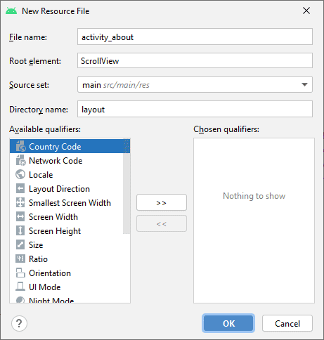
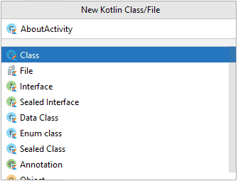
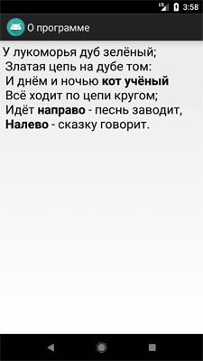
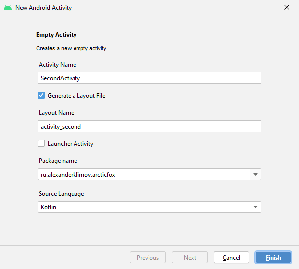
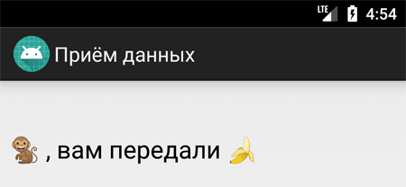
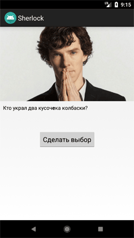
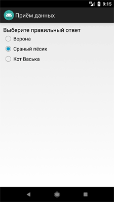
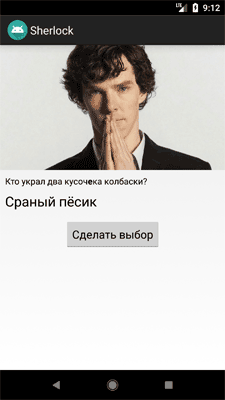
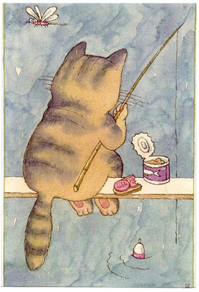

Переключение между экранами приложения
Простое переключение на другой экран
Приложение не всегда состоит из одного экрана. Например, мы создали очень полезную программу и пользователю хочется узнать, кто же её автор. Он нажимает на кнопку «О программе» и попадает на новый экран, где находится полезная информация о версии программы, авторе, адресе сайта, сколько у автора котов и т.д. Воспринимайте экран активности как веб-страницу с ссылкой на другую страницу. Если вы посмотрите на код в файле MainActivity из прошлых уроков, то увидите, что наш класс MainActivity тоже относится к Activity (или его наследникам) или, если говорить точнее, наследуется от него.
class MainActivity : Activity()
Как нетрудно догадаться, нам следует создать новый класс, который может быть похож на MainActivity и затем как-то переключиться на него при нажатии кнопки.
Для эксперимента мы возьмём программу из первого урока и будем использовать для опытов кнопку (или создайте новый проект с одной кнопкой на экране). Далее создадим новую форму для отображения полезной информации. Например, покажем пользователю, что делает кот, когда идёт налево и направо. Согласитесь, это очень важная информация, дающая ключ к разгадке Вселенной.
Создавать новую активность будем вручную, хотя в студии есть готовые шаблоны. Но там ничего сложного и для лучшего понимания полезно всё делать руками.
Создадим новый XML-файл разметки activity_about.xml в папке res/layout. Щёлкните правой кнопкой мыши на папке layout и выберите из контекстного меню New | Layout resource file. Появится диалоговое окно. В первом поле вводим имя файла activity_about. Во втором нужно ввести корневой элемент. По умолчанию там стоит ConstraintLayout. Стираем текст и вводим ScrollView. Ввода нескольких символов достаточно, чтобы студия подсказала готовые варианты, можно сразу нажать Enter, не дожидаясь полного ввода слова:

Получится соответствующая заготовка, в которую вставим элемент TextView.
<?xml version="1.0" encoding="utf-8"?>
<ScrollView
xmlns:android="http://schemas.android.com/apk/res/android"
android:layout_width="match_parent"
android:layout_height="match_parent">
<TextView
android:id="@+id/textview_about_content"
android:layout_width="wrap_content"
android:layout_height="wrap_content"
android:text="@string/about_text"/>
</ScrollView>
Информация будет извлекаться из ресурсов, а именно из строкового ресурса about_text. Сейчас он подсвечен красным цветом, сигнализируя об отсутствии информации. Можно было нажать Alt+Enter и ввести текст в диалоговом окне. Но для нашего примера этот способ не подойдёт, так как наш текст будет многострочным, с использованием управляющих символов. Поэтому поступим по-другому. Откроем файл res/values/strings.xml и вводим следующий текст вручную:
<string name="about_text">
У лукоморья дуб зелёный;\\n
Златая цепь на дубе том:\\n
И днём и ночью <b>кот учёный</b>\\n
Всё ходит по цепи кругом;\\n
Идёт <b>направо</b> - песнь заводит,\\n
<b>Налево</b> - сказку говорит.</string>
Мы использовали простейшие HTML-теги форматирования текста типа <b>, <i>, <u>. Для нашего примера достаточно выделить жирным слова, которые относятся к коту и направлению движения. Для перевода текста на новую строку используйте символы \\n. Добавим ещё один строковый ресурс для заголовка нового экрана:
<string name="about_title">О программе</string>
С разметкой разобрались. Далее необходимо создать класс для окна AboutActivity. Выбираем из контекстного меню вашего пакета в папке java меню New | Kotlin Class/File, в диалоговом окне указываем имя класса, а в выпадающем списке выбираем Class.

Получим заготовку класса. Сейчас класс пустой, добавим код вручную. Класс должен наследоваться от абстрактного класса Activity или его родственников типа FragmentActivity, AppCompatActivity и т.д. Дописываем : Activity(). У класса активности должен быть метод onCreate(). Ставим курсор мыши внутри класса и выбираем в меню Code | Override Methods (Ctrl+O). В диалоговом окне ищем нужный класс, можно набирать на клавиатуре первые символы для быстрого поиска. Можно поступить проще - просто набирать имя метода внутри класса, студия сама покажет через автодополнение нужный вариант и создаст шаблон метода.
В созданном методе нужно вызвать метод setContentView(), который подгрузит на экран подготовленную разметку. У нас получится такой вариант.
package ru.alexanderklimov.another
import android.app.Activity
import android.os.Bundle
class AboutActivity : Activity() {
override fun onCreate(savedInstanceState: Bundle?) {
super.onCreate(savedInstanceState)
setContentView(R.layout.activity_about)
}
}
Раньше студия подчёркивала жёлтым цветом слово AboutActivity и предупреждала, что следует создать запись в манифесте. Сейчас предупреждение отсутствует, поэтому попросите рядом сидящего кота напомнить об этом. Подводим мышь к названию класса, нажимаем Alt+Enter и в контекстом меню выбираем пункт Add activity to manifest. В манифесте будет сделана соответствующая запись, мы позже к ней вернёмся.
Теперь начинается самое главное. Наша задача - перейти на новый экран при щелчку кнопки на первом экране. Переходим обратно к классу MainActivity. Напишем обработчик щелчка кнопки:
button.setOnClickListener {
val intent = Intent([email protected], AboutActivity::class.java)
startActivity(intent)
}
Для запуска нового экрана необходимо создать экземпляр класса Intent и указать в первом параметре текущий класс, а во втором - класс для перехода, у нас это AboutActivity. После этого вызывается метод startActivity(), который и запускает новый экран.
Откройте файл манифеста AndroidManifest.xml и посмотрите на его код. Там была добавлена одна строка после нашего предыдущих действий с классом AboutActivity:
<activity android:name=".AboutActivity" />
Добавим ещё одну строку кода.
<activity
android:name=".AboutActivity"
android:label="@string/about_title" />
Вот и пригодился строковый ресурс about_title. При желании вы можете добавить и другие настройки для активности, например, тему. Запускаем приложение, щёлкаем на кнопке и получаем окно О программе. Таким образом мы научились создавать новое окно и вызывать его по щелчку кнопки. А в нашем распоряжении появилась мегаудобная программа - теперь всегда под рукой будет подсказка, что делает кот, когда идёт налево.

Ещё раз обращаю внимание, что второй создаваемый класс активности должен наследоваться от класса Activity или ему похожих (ListActivity и др.), иметь XML-файл разметки (если требуется) и быть прописан в манифесте.
После вызова метода startActivity() запустится новая активность (в данном случае AboutActivity), она станет видимой и переместится на вершину стека, содержащего работающие компоненты. При вызове метода finish() из новой активности (или при нажатии аппаратной клавиши возврата "Back") она будет закрыта и удалена из стека. Разработчик также может перемещаться к предыдущей (или к любой другой) активности, используя всё тот же метод startActivity().
Если хотим добавить стрелку в заголовок второй активности для возврата на родительскую активность, то пропишем в манифесте необходимые данные.
<activity
android:name=".AboutActivity"
android:parentActivityName=".MainActivity"
android:theme="@android:style/Theme.Holo.Light.DarkActionBar">
<meta-data
android:name="android.support.PARENT_ACTIVITY"
android:value=".MainActivity" />
</activity>
В этом случае нам даже не придётся добавлять свою кнопку на экран второй активности и писать код, система сама всё сделает за нас. В примере использовалась устаревшая тема Holo, можете попробовать прописать другие темы.
Создаём третий экран - способ для ленивых
Программисты, как и коты, существа ленивые. Постоянно помнить, что для активности нужно создать разметку и класс, который наследуется от Activity, а затем не забыть прописать класс в манифесте - да ну нафиг.
В этом случае выберите из контекстного меню пакета выберите New | Activity | Basic Activity (или другой шаблон). Дальше появится знакомое вам окно создания новой активности. Заполняем необходимые поля.

Нажимаем на кнопку Finish и активность будет готова. Чтобы убедиться в этом, откройте файл манифеста и проверьте наличие новой записи. Про файлы класса и разметки я уже не говорю, они сами появятся перед вами.
Самостоятельно добавьте новую кнопку на экране главной активности и напишите код для перехода на созданную активность.
На первых порах я бы посоветовал вам вручную создавать все необходимые компоненты для новой активности, чтобы понимать взаимосвязь между классом, разметкой и манифестом. А когда набьёте руку, то можете использовать мастер создания активности для ускорения работы.
Передача данных между активностями
Мы использовали простейший пример для вызова другого экрана активности. Иногда требуется не только вызвать новый экран, но и передать в него данные. Например, имя кота. В этом случае нужно задействовать специальную область extraData, который имеется у класса Intent.
Область extraData - это список пар ключ/значение, который передаётся вместе с намерением. В качестве ключей используются строки, а для значений можно использовать любые примитивные типы данных, массивы примитивов, объекты класса Bundle и др.
Для передачи данных в другую активность используется метод putExtra():
intent.putExtra("Ключ", "Значение")
Принимающая активность должна вызвать какой-нибудь подходящий метод: getIntExtra(), getStringExtra() и т.д.:
int count = getIntent().getIntExtra("name", 0)
Переделаем предыдущий пример. У нас уже есть три активности. У первой активности разместим два текстовых поля и кнопку. Внешний вид может быть следующим:

У второй активности SecondActivity установим элемент TextView, в котором будем выводить текст, полученный от первой активности. Напишем следующий код для метода onCreate() у второй активности.
override fun onCreate(savedInstanceState: Bundle?) {
super.onCreate(savedInstanceState)
setContentView(R.layout.activity_second)
val user = "ЖЫвотное"
val gift = "дырку от бублика"
textview_second_info.text = user + " , вам передали " + gift
}
Если сейчас запустить программу и просто вызвать второе окно, как это было описано в первой части статьи, то мы увидим надпись по умолчанию ЖЫвотное, вам передали дырку от бублика. Согласитесь, довольно обидно получать такие сообщения.
Исправляем ситуацию. Добавляем код у первой активности:
button.setOnClickListener {
val intent = Intent([email protected], SecondActivity::class.java)
// в ключ username пихаем текст из первого текстового поля
intent.putExtra("username", edit_address.text.toString())
// в ключ gift пихаем текст из второго текстового поля
intent.putExtra("gift", edit_gift.text.toString())
startActivity(intent)
}
Мы поместили в специальный контейнер объекта Intent два ключа со значениями, которые берутся из текстовых полей. Когда пользователь введёт данные в текстовые поля, они попадут в этот контейнер и будут переданы второй активности.

Вторая активность должна быть готова к тёплому приёму сообщений следующим образом (выделено жирным).
// Значения по умолчанию
var user = "ЖЫвотное"
var gift = "дырку от бублика"
user = intent.extras.getString("username")
gift = intent.extras.getString("gift")
textview_second_info.text = "$user , вам передали $gift"
Теперь сообщение выглядит не столь обидным, а даже приятным для кое-кого. В сложных примерах желательно добавить проверку при обработке данных. К счастью, Kotlin хорошо справляется с данными типа null и предохраняет от краха приложения, но проверить на пустую строку не помешает, чтобы сообщить пользователю о необходимости заполнить поля.

Если клавиатура поддерживает эмодзи, то их тоже можно использовать.

В нашем случае мы знаем, что ждём строковое значение, поэтому код можно переписать так:
user = intent.getStringExtra("username")
У программы есть недостаток - не понятно, от кого мы получаем приветы. Любая хорошо воспитанная мартышка не возьмёт подарок от анонимного источника. Поэтому в качестве домашнего задания добавьте ещё одно текстовое поле для ввода имени пользователя, который отправляет сообщение.

Google рекомендует для ключей использовать следующий формат: имя вашего пакета в качестве префикса, а затем сам ключ. В этом случае можно быть уверенным в уникальности ключа при взаимодействии с другими приложениями. Приблизительно так:
companion object {
const val USER = "ru.alexanderklimov.myapp.USER"
}
Кто подставил кота Ваську - получаем результат обратно
Не всегда бывает достаточно просто передать данные другой активности. Иногда требуется получить информацию обратно от другой активности при её закрытии. Если раньше мы использовали метод startActivity(Intent intent), то существует родственный ему метод startActivityForResult(Intent intent, int RequestCode). Разница между методами заключается в дополнительном параметре RequestCode. По сути это просто целое число, которое вы можете сами придумать. Оно нужно для того, чтобы различать от кого пришёл результат. Допустим у вас есть пять дополнительных экранов и вы присваиваете им значения от 1 до 5, и по этому коду вы сможете определить, чей результат вам нужно обрабатывать. Вы можете использовать значение -1, тогда это будет равносильно вызову метода startActivity(), т.е. никакого результата не получим.
Если вы используете метод startActivityForResult(), то вам необходимо переопределить в коде метод для приёма результата onActivityResult() и обработать полученный результат. Запутались? Давайте разберём пример.
Предположим, вы сыщик. Поступила информация, что в ресторане со стола влиятельного человека украли два кусочка колбасы и другие продукты. Подозрение пало на трёх подозреваемых - ворона, сраный пёсик и кот Васька.
Один из посетителей предоставил серию фотографий со своего понтового айфона:
Также имеются показания другого свидетеля: А Васька слушает, да ест.
Создаём новый проект Sherlock с двумя активностями. На первом экране будет кнопка для переключения на второй экран и текстовая метка, в которой будет отображено имя воришки.
<?xml version="1.0" encoding="utf-8"?>
<androidx.constraintlayout.widget.ConstraintLayout
xmlns:android="http://schemas.android.com/apk/res/android"
xmlns:app="http://schemas.android.com/apk/res-auto"
xmlns:tools="http://schemas.android.com/tools"
android:layout_width="match_parent"
android:layout_height="match_parent"
tools:context=".MainActivity">
<ImageView
android:id="@+id/imageView"
android:layout_width="wrap_content"
android:layout_height="wrap_content"
android:adjustViewBounds="true"
android:scaleType="fitStart"
android:src="@drawable/sherlock"
app:layout_constraintStart_toStartOf="parent"
app:layout_constraintTop_toTopOf="parent" />
<TextView
android:id="@+id/textview_label"
android:layout_width="0dp"
android:layout_height="wrap_content"
android:layout_marginEnd="8dp"
android:layout_marginStart="8dp"
android:layout_marginTop="8dp"
android:text="@string/who"
android:textAppearance="@android:style/TextAppearance.DeviceDefault"
app:layout_constraintEnd_toEndOf="parent"
app:layout_constraintHorizontal_bias="0.5"
app:layout_constraintStart_toStartOf="parent"
app:layout_constraintTop_toBottomOf="@+id/imageView" />
<TextView
android:id="@+id/textview_into"
android:layout_width="0dp"
android:layout_height="wrap_content"
android:layout_marginEnd="8dp"
android:layout_marginStart="8dp"
android:layout_marginTop="8dp"
android:textAppearance="@android:style/TextAppearance.DeviceDefault.Large"
app:layout_constraintEnd_toEndOf="parent"
app:layout_constraintHorizontal_bias="0.5"
app:layout_constraintStart_toStartOf="parent"
app:layout_constraintTop_toBottomOf="@+id/textview_label" />
<Button
android:id="@+id/button_choose"
style="@android:style/Widget.Holo.Light.Button"
android:layout_width="wrap_content"
android:layout_height="wrap_content"
android:layout_marginBottom="8dp"
android:layout_marginTop="8dp"
android:text="Сделать выбор"
app:layout_constraintBottom_toBottomOf="parent"
app:layout_constraintEnd_toEndOf="parent"
app:layout_constraintHorizontal_bias="0.501"
app:layout_constraintStart_toStartOf="parent"
app:layout_constraintTop_toBottomOf="@+id/textview_into"
app:layout_constraintVertical_bias="0.033" />
</androidx.constraintlayout.widget.ConstraintLayout>
На втором экране будет группа переключателей:
<?xml version="1.0" encoding="utf-8"?>
<LinearLayout
xmlns:android="http://schemas.android.com/apk/res/android"
android:layout_width="match_parent"
android:layout_height="match_parent"
android:orientation="vertical"
android:padding="10dp">
<TextView
android:id="@+id/textView"
android:layout_width="match_parent"
android:layout_height="wrap_content"
android:text="Выберите правильный ответ"
android:textAppearance="?android:attr/textAppearanceMedium" />
<RadioGroup
android:id="@+id/radioGroup"
android:layout_width="wrap_content"
android:layout_height="wrap_content">
<RadioButton
android:id="@+id/radio_crow"
android:layout_width="wrap_content"
android:layout_height="wrap_content"
android:checked="false"
android:text="Ворона" />
<RadioButton
android:id="@+id/radio_dog"
android:layout_width="wrap_content"
android:layout_height="wrap_content"
android:text="Сраный пёсик" />
<RadioButton
android:id="@+id/radio_cat"
android:layout_width="wrap_content"
android:layout_height="wrap_content"
android:text="Кот Васька" />
</RadioGroup>
</LinearLayout>
Так как мы будем ожидать ответ из второго экрана, то нам необходимо задействовать метод startActivityForResult() на первом экране, в котором мы передадим переменную REQUEST_CHOOSE_THIEF в качестве параметра RequestCode.
companion object{
const val REQUEST_CHOOSE_THIEF = 0
}
button_choose.setOnClickListener {
val questionIntent = Intent([email protected],
SecondActivity::class.java)
startActivityForResult(questionIntent, REQUEST_CHOOSE_THIEF)
}
При щелчке на кнопке мы запускаем вторую активность с ожиданием результата.
Переходим на второй экран и будем писать код для второй активности.
package ru.alexanderklimov.sherlock
import android.app.Activity
import android.content.Intent
import android.os.Bundle
import android.widget.RadioGroup
const val THIEF = "ru.alexanderklimov.sherlock.THIEF"
class SecondActivity : Activity() {
override fun onCreate(savedInstanceState: Bundle?) {
super.onCreate(savedInstanceState)
setContentView(R.layout.activity_second)
val radioGroup : RadioGroup = findViewById(R.id.radioGroup)
radioGroup.setOnCheckedChangeListener { _, optionId ->
val answerIntent = Intent()
when (optionId) {
R.id.radio_dog -> answerIntent.putExtra(THIEF, "Сраный пёсик")
R.id.radio_crow -> answerIntent.putExtra(THIEF, "Ворона")
R.id.radio_cat -> answerIntent.putExtra(THIEF, "Лошадь Пржевальского")
}
setResult(RESULT_OK, answerIntent)
finish()
}
}
}
Здесь всё просто, когда сыщик выбирает имя преступника, то через метод putExtra() мы передаём имя ключа и его значение.
Для удобства, после выбора мы сразу закрываем второе окно и перед закрытием передаём значение RESULT_OK, чтобы было понятно, что выбор сделан. Если пользователь закроет экран через кнопку Back, то будет передано значение RESULT_CANCELED.
Метод setResult() принимает два параметра: результирующий код и сам результат, представленный в виде намерения. Результирующий код говорит о том, с каким результатом завершилась работа активности, как правило, это либо Activity.RESULT_OK, либо Activity.RESULT_CANCELED. В некоторых случаях нужно использовать собственный код возврата для обработки специфических для вашего приложения вариантов. Метод setResult() поддерживает любое целочисленное значение.
Если вы будете передавать данные явно через кнопку, то неплохо бы добавить метод finish(), чтобы закрыть вторую активность за ненадобностью. Если переход происходит через кнопку Back/Назад, то это делать не обязательно.
Если активность была закрыта пользователем при нажатии аппаратной кнопки возврата или если метод finish() был вызван раньше, чем метод setResult(), результирующий код установится в RESULT_CANCELED, а возвращённое намерение покажет значение null.
Возвращаемся на первый экран. Первый экран ожидает ответа от второго экрана, поэтому нужно добавить в код метод onActivityResult().
override fun onActivityResult(requestCode: Int, resultCode: Int, data: Intent?) {
super.onActivityResult(requestCode, resultCode, data)
if (requestCode == REQUEST_CHOOSE_THIEF) {
if (resultCode == Activity.RESULT_OK) {
val thiefName = data?.getStringExtra(THIEF)
textview_info.text = thiefName
} else {
textview_info.text = "" // стираем текст
}
}
}
Позже я переписал пример ближе к Kotlin-стилю.
override fun onActivityResult(requestCode: Int, resultCode: Int, data: Intent?) {
super.onActivityResult(requestCode, resultCode, data)
if (resultCode == Activity.RESULT_OK) {
when (requestCode) {
REQUEST_CHOOSE_THIEF -> {
val thiefName = data?.getStringExtra(THIEF)
textview_info.text = thiefName.toString()
}
// Другие запросы
// REQUEST_MULTIPLE_PERMISSION -> {
// // Do something if success / failed
// }
}
} else{
textview_info = "" // стираем текст
}
}
Метод ожидает входящие данные с кодом запроса REQUEST_CHOOSE_THIEF, и если такие данные поступят, то извлекает значение из ключа THIEF с помощью метода getStringExtra. Полученное значение мы выводим в TextView. Если мы вернулись на экран через кнопку Back, то просто стираем текст.
При закрытии дочерней активности внутри родительского компонента срабатывает обработчик onActivityResult().
Обработчик onActivityResult() принимает несколько параметров.
- Код запроса. Код, который использовался для запуска активности, возвращающей результат
- Результирующий код. Код результата, устанавливаемый дочерней активностью и указывающий, как завершилась её работа. Это может быть любое целочисленное значение, но, как правило, либо Activity.RESULT_OK, либо Activity.RESULT_CANCELED
- Данные. Намерение, используемое для упаковки возвращаемых данных. В зависимости от назначения дочерней активности оно может включать путь URI, представляющий выбранную часть содержимого. В качестве альтернативы (или дополнения) дочерняя активность может возвращать информацию в виде простых значений, упакованных в параметр намерения extras
Запускаем проект, нажимаем на кнопку и переходим на второй экран. Там выбираем один из вариантов. Если выбрать ворону, то экран закроется и имя преступника отобразится на первом экране. Если выбрать пёсика, то отобразится его имя.
  
Между прочим, если выбрать котика, то его имя не отобразится! Проверьте и убедитесь сами. Вы спросите почему? Элементарно, Ватсон! Преступник не учёл одной важной детали. В ресторане велось наблюдение с видеокамер, и запись показала, кто на самом деле украл колбаску и подставил кота. Васька, держись!

P.S. Если поначалу что-то показалось непонятным, то с практикой многое прояснится. Передача данных между экранами часто встречается в приложениях и вы ещё не раз изучите пример.
P.P.S. Лучшая рыба - колбаса. Зная эту слабость, нетрудно было подставить кота.

Относительно недавно Google объявила методы startActivityForResult()/onActivityResult() устаревшими, студия теперь перечёркивает их названия. Новый способ описан в другой статье, но пока вы можете без проблем использовать старый проверенный способ.